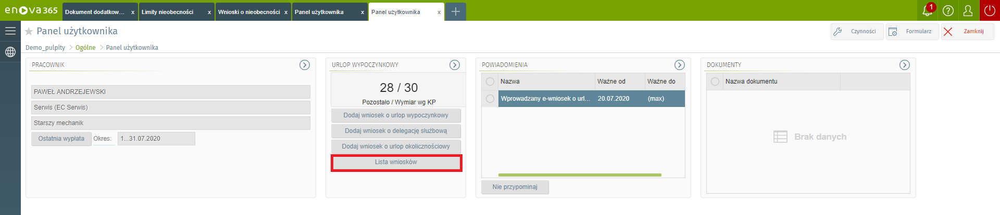

Wnioski o nieobecności
Formularz zawiera listę wprowadzonych wniosków o nieobecności w trybie podglądu. Wnioski można filtrować przy pomocy dostępnych filtrów:
Rodzaj – Każdy z wniosków może posiadać odpowiedni status, w zależności od tego czy dany wniosek został już zaakceptowany przez przełożonego mogą one przyjmować następujące stany:
Wszystkie – wszystkie wnioski o nieobecności niezależnie, jaki stan posiadają.
Oczekujące – wnioski o nieobecności wprowadzone przez użytkownika, ale niezaakceptowane przez przełożonego.
Zaakceptowane – wnioski zaakceptowane przez przełożonego
Odrzucone - jeżeli przełożony nie zaakceptuje danego wniosku.
Anulowane - jeżeli dany wniosek zostanie anulowany przez użytkownika.
Okres – okres, za jaki chcemy przeglądać listę wniosków, w formacie: „data…data”, na przykład: 2002-01-01…2002-12-31. W filtrze 'Okres' domyślnie jest ustawiona wartość 'wszystko', czyli na liście będą wyświetlane zadania, które nie zostały jeszcze zrealizowane.

Tworzenie wniosku
Aby utworzyć wniosek o nieobecności na panelu użytkownika klikamy w 'Lista wniosków'.

Następnie po prawej stronie na zakładce klikamy w przycisk w kształcie strzałki w dół i wybieramy interesujący nas wniosek.
Dostępne wnioski:
- e-ubezpieczenie członka rodziny
- e-wniosek o delegację
- e-wniosek o opiekę (dni)
- e-wniosek o opiekę (godz)
- e-wniosek o urlop okolicznościowy
- e-wniosek o urlop wypoczynkowy
- e-wniosek o zmianę adresu
- e-zmiana danych osobowych
- e-zmiana danych podatkowych
- e-zmiana dokumentu tożsamości
- e-zmiana rachunku bankowego
Jako partnerzy Enova365 mamy możliwość tworzenia nowych wniosków na potrzeby klienta.
Opis dostępnych pól w przypadku złożenia wniosku o urlop wypoczynkowy:
Sekcja Wniosek
Nieobecność – zostaje ustawiona automatycznie w zależności od wybranego rodzaju wniosku,
Okres – okres na który pracownik składa wniosek o urlop, pole edytowalne
Dni – ilość dni urlopu
Czas trwania nieobecności krótszy niż jeden dzień - parametr umożliwia zewidencjonowanie urlopu wypoczynkowego na godziny
Zastępca – osoba zastępująca pracownika w pracy, pole nieedytowalne
Data złożenia – data złożenia wniosku
Sekcja Urlop wypoczynkowy
- Przyczyna udzielenia urlopu - do wyboru: planowy, na żądanie
Sekcja Podsumowanie
Norma w okresie wnioskowanej nieobecności: liczba dni oraz godzin, na które wnioskowana jest nieobecność.
Poprzednie, niezatwierdzone wnioski: liczba dni oraz godzin, które przypadają na złożone ale niezatwierdzone wnioski.
Niewykorzystany limit nieobecności (godz.): liczba godzin niewykorzystanego limitu urlopu wypoczynkowego.
Pozostaje po uwzg. niezatwierdzonych wniosków (godz.): liczba godzin po uwzględnieniu niezatwierdzonych wniosków.
Sekcja Urlop wypoczynkowy na żądanie
Norma w okresie wnioskowanej nieobecności: liczba dni, na które wnioskowana jest nieobecność.
Poprzednie, niezatwierdzone wnioski: liczba dni, które przypadają na złożone ale niezatwierdzone wnioski o urlop wypoczynkowy z przyczyną na żądanie.
Niewykorzystany limit nieobecności (dni): liczba dni niewykorzystanego limitu urlopu wypoczynkowego z przyczyną na żądanie.
Pozostaje po uwzg. niezatwierdzonych wniosków (dni): liczba dni po uwzględnieniu niezatwierdzonych wniosków o urlop wypoczynkowy z przyczyną na żądanie.
Sekcja Decyzja
Kierownik: należy wskazać kierownika, który powinien zaakceptować wniosek złożony przez pracownika
Data decyzji: data decyzji kierownika
Stan wniosku: do wyboru: Oczekujący, Anulowany, Zaakceptowany, Odrzucony.
Sekcja Uwagi
- Uwagi – pole edycyjne do wprowadzenia dodatkowych informacji
Po wypisaniu pól na formularzu w prawym górnym rogu klikamy przycisk zapisz. Od tego momentu nasz wniosek powinien być widoczny na liście wniosków oraz liście 'Wnioski o nieobecność'.
Inne wnioski
Lista innych wniosków służy do ewidencji i wyświetlania innych wniosków, które są definiowane na etapie wdrożenia.